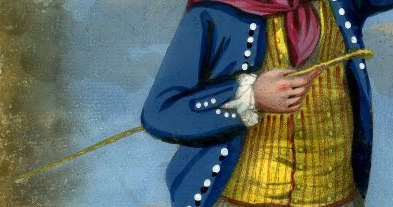
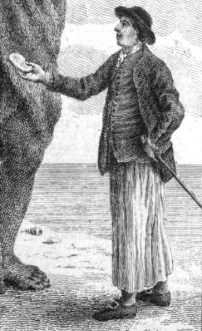

나폴레옹 시대 영국 전함의 전투 광경 - Lieutenant Hornblower 중에서 (6)
게시: 2019-03-18T06:30:00+09:00
저 아래 하갑판에서의 열기는 햇볕이 이글거리는 상갑판보다 훨씬 더 뜨거웠다. 혼블로워가 지휘하는 대포들에서 나오는 연기가 대들보 아래까지 가득했다. 혼블로워는 모자를 손에 들고 땀이 줄줄 흐르는 얼굴을 손수건으로 닦아내고 있었다. 그는 부시가 나타나자 고개를 끄떡여 보였다. 부시가 굳이 말하지 않아도 그가 맡은 임무는 분명해 보였다. 아직 대포가 쾅쾅 소리를 내며 포격을 하고 연기가 파도처럼 밀려드는 와중에, 화약 보이들이 새 장약포를 들고 뛰어다니고 화재 진압조가 물통을 들고 난리법석을 떨고 있었는데, 그 가운데 부시의 부하들은 닻줄을 끄집어 내었다. 수백 패덤(fathom : 1 패돔은 1.8m : 역주)에 달하는 닻줄은 무게가 2톤이 약간 넘었다. 다들 정신을 똑바로 차리고 숙련된 지휘를 받아야 이 다루기 힘든 굵은 닻줄을 고물 쪽으로 빼낼 수 있었으므로, 부시는 이 집중을 요구하는 중대 임무를 위해 최선을 다하고 있었다. 부시가 닻줄을 다 빼내어 첩첩이 사려놓을 (fake down : 여기서 fake는 밧줄을 쓰기 편하게 접어서 사려놓는다 라는 뜻으로 쓰였습니다 : 역주) 때 즈음해서 커터 보트(the cutter)가 닻줄 끝을 받기 위해 고물 바로 아래로 저어왔고, 이제 부시는 고물 포문을 통해 그 굵고 긴 닻줄이 조금의 걸림도 없이 술술 빠져나가는 것을 볼 수 있었다. 그가 밖을 내다보고 있는 동안 론치 보트가 꼬리에 엄청난 무게의 스트림 닻을 매달고 시야에 들어왔다. 론치 보트에 닻을 싣는 것이 쉬운 일이 아니었을텐데 결국 저렇게 잘 실은 것을 보니 마음이 놓였다. 두번째 커터 보트가 닻줄 구멍(hawsehole)으로부터 나온 스프링 닻줄(spring cable)을 끌고 왔다. 로버츠가 지휘하고 있었다. 세 보트가 전함 뒤쪽으로 멀어져가는 중에 그가 커터 보트를 부르며 외치는 소리가 부시 귀에 들어왔다. 갑자기 보트들 중간에 물기둥이 솟았다. 두 요새의 포대 중 최소한 하나는 목표물을 바꾼 것이었다. 지금 상황에서 론치 보트에 포탄이 명중한다면 그건 정말 재앙이 될 것이고, 두 커터 중 한 대에 맞더라도 상황이 매우 안 좋아질 것이었다.
"실례합니다, 부관님." 그의 옆에서 혼블로워 목소리가 들렸다. 부시는 번들거리는 물 위를 쳐다보다 시선을 그에게 돌렸다.
"뭔가 ?"
"맨 앞에 있는 함포들을 움직여 뒤쪽으로 가져올 수 있습니다." 혼블로워가 말했다. "전함의 무게 중심을 뒤쪽으로 옮기면 도움이 될 겁니다."
"그렇겠군." 부시도 동의했다. 부시가 자신의 권한만으로 그런 명령을 내릴 수 있을지를 고민하는 중에 슬쩍 보니 혼블로워의 얼굴은 고된 전투로 인해 지저분하고 긴장감이 가득했다. "버클랜드의 허가를 받는 것이 좋겠네. 원하면 내 이름으로 묻도록 하게."
"예, 부관님."
하갑판의 이 24파운드 함포들은 무게가 각각 2톤 이상씩 나갔다. 선수부에 있는 몇 문을 선미부로 옮긴다면 뻘에 박힌 이물을 빼내는데 꽤 중요한 요소가 될 듯 했다. 부시는 다시 한번 포문을 통해 밖을 내다보았다. 첫번째 커터 보트를 지휘하는 사관생도 제임스는 전함의 길이 방향으로 똑바로 케이블이 뻗었는지 확인하기 위해 뒤를 돌아보고 있었다. 만약 닻에서 캡스턴으로 이어지는 닻줄에 약간이라도 각도가 벌어진다면 견인력이 상당히 떨어질 것이기 때문이었다. 론치 보트와 커터 보트가 닻을 던질 준비를 하기 위해 서로 접근하고 있었다. 그들 주변의 수면이 해안에서 날아온 일제 사격에 의해 갑자기 물보라로 들끓었다. 포탄이 수면 위에서 튀어가며 일으키는 물보라를 보니 그들에게 포격을 가하고 있는 것은 언덕 위의 요새였다. 거리가 아주 멀다는 점을 고려하면 굉장히 조준 솜씨가 뛰어난 편이었다. 햇살에 번뜩이는 도끼날이 론치 보트 뒤쪽 허공에 보였다. 부시의 눈에 그 순간적인 번쩍임이 들어온 것이다. 론치 보트 선미에 닻을 묶었던 밧줄을 끊어 닻을 투하하고 있었다. 그나마 다행이었다.
혼블로워의 함포들은 여전히 불을 뿜고 있어서 그 반동에 따라 전함이 진동했다. 그와 동시에 그의 머리 위에서 우지끈 소리가 들리는 것으로 보아 다른 요새의 포대는 여전히 전함에 대고 포격을 하고 있으며 여전히 명중탄을 내고 있다는 것을 알 수 있었다. 모든 일이 여전히 동시에 벌어지고 있었다. 혼블로워는 수병들을 시켜 우현 이물 맨 앞에 있던 24파운드 함포 하나를 고물쪽으로 끌고 가게 했다. 이건 포가(carriage)의 가로대 밑에 회전 지렛대를 넣어서 수행해야 하는 까다로운 작업이었다. 수병들이 이 다루기 힘든 물건을 돌려서 수병들이 빽빽히 들어차 있는 갑판 한가운데를 헤치며 밀고가는 동안 포가에서는 끔찍한 삐걱삐걱 소리가 났다. 하지만 부시에게도 혼블로워를 한번 힐끗 쳐다볼 여유 밖에 없었고, 그도 캡스턴에서 일이 어떻게 돌아가고 있는지 살펴보기 위해 서둘러 주갑판에 올라가야 했다.
수병들은 스미스와 부스의 감독 하에 이미 캡스턴을 중심으로 바퀴살처럼 펼쳐진 막대 손잡이들에 각각 위치를 잡고 있었다. 캡스턴을 돌릴 충분한 인력을 확보하기 위해 주갑판의 함포들에서 수병들을 최후의 한 명까지 차출되고 있었다. 상의는 모조리 벗은 채, 수병들은 손에 침을 뱉고 발 디딜 곳을 살펴보고 있었다. 이들에게 현재 상황이 얼마나 심각한지 이야기해줄 필요는 없었다. 갑판장(bosun) 부스의 울퉁불퉁한 회초리(knotted rattan : PS1 참조)도 필요 없었다.
"밀어라 !" (Heave away!) 선미갑판에서 버클랜드가 외쳤다.
"밀어라 !" 부스도 외쳤다. "밀어, 죽을 힘을 다해 밀어 !" (Heave, and wake the dead!)


------------------
PS1. Rattan이라는 말을 영어사전에서 찾아보면 등나무라고 되어 있습니다만, 여기서는 야자수 등으로 만든 얇은 막대기, 즉 회초리를 뜻하는 것입니다. 이런 회초리를 휘두르는 것은 주로 갑판장(bosun 또는 boatswain)과 그의 조수들인 bosun's mate 등이었습니다만, 어지간한 부사관(petty officer)들은 다 들고 다녔다고 합니다. 그런 기분 나쁜 물건을 들고 다니는 목적은 당연히 수병들을 때리려는 것이었습니다.
원래 영국은 해군이나 육군이나 사병들에 대한 잔혹한 체벌로 악명 높았는데, 그래도 뭔가 잘못을 저지를 경우 사병 간에 마구잡이 구타를 하는 것은 아니었습니다. 장교나 부사관들이 잘못을 저지른 사병의 이름을 적어놓았다가 정해진 날(주로 일요일)에 부대장이나 함장의 판결을 받아서 주로 채찍질로 처벌했습니다. 이런 채찍질은 등가죽이 홀라당 벗겨질 정도의 중형이라서, 사소한 잘못에 대해서까지 이런 채찍질을 하지는 않았습니다.
그래서 갑판장 등이 rattan이라는 회초리를 들고 다니다가, 힘껏 돛줄을 당기라는데 게으름을 피우며 열심히 하지 않는 수병들을 후려갈겼습니다. 때릴 때는 주로 머리통과 어깨 등을 인정사정 없이 마구 내리쳤답니다. 보통은 1~2대씩 본보기 차원에서 내리쳤으나, 이런 매질에는 아무 제한이나 규정 등이 없어서 성격이 잔인한 갑판장이나 갑판장 조수라면 평소 마음에 안 들었던 수병들을 맘먹고 제대로 혼을 내줄 수도 있었고, 무엇보다 규율을 중시했던 함장과 장교들은 그런 처사를 묵인했습니다. 그에 대한 항의는 물론 허락되지 않았으며, 일개 수병이 이런 매질에 반향을 할 경우 정말 군법회의에 넘겨져 목숨을 잃을 수도 있었습니다.
Source : https://www.britishtars.com/search/label/rattan